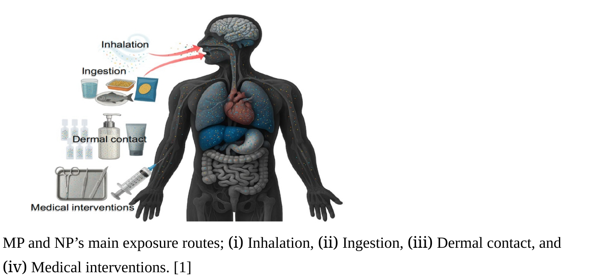

Micro-plastics (MP) are tiny plastic particles generally defined as pieces smaller than 5mm. They are made from common plastic polymers such as Polyvinyl chloride (PVC), Polyethylene, and Polystyrene. These particles are formed by the breakdown of larger plastics and from the industrial and consumer products such as packaging, synthetic textiles, and household products. [3]
Interestingly, plastics can break down even further. Beyond microplastics, there are extremely small particles (smaller than 1 μm), known as nano plastics (NP).
How Tiny Plastics Spread Through Air, Water, and Soil and enter in to human bodies?
Microplastics and nano-plastics directly enter soils through agricultural activities such as plastic mulching, irrigation, and compost use, as well as from industrial sources, landfills, tire wear, sewage sludge, and atmospheric deposition. Due to limited mobility and low UV exposure, soils act as major sinks for these particles. Their presence can affect soil structure, alter physicochemical properties and microbial communities, impact plant growth, and potentially move through food chains from plants to animals and humans. [4]
MPs and NPs in aquatic systems ainly originate from plastic waste transported from land and the degradation of larger plastic debris. In marine systems, plastics make up about 80-85% of total litter. With lack of degradability and buoyancy these particles invade and accumulate due to wind, tides, and ocean currents. As a result, nearly 700 marine species have been reported to interact with or ingest plastic particles, including invertebrates, fish, and shrimp, which may allow microplastics to enter human food chains through seafood consumption. Microplastics are also widely detected in freshwater systems, including rivers, lakes, groundwater, Arctic glaciers, and even deep-sea waters. [4]
Outdoor Airborne MPs and NPs come mainly from urban sources, such as textile fibers, building materials, furniture, carpets, and plastic waste degradation. They are found in urban, suburban, rural, and indoor environments. Urban areas generally show higher abundance than rural areas. [4] Indoor airborn MPs and NPs origiante from synthetic clothing, furniture and carpets. Due to lack of circulation by air conditioning MPs and NPs tend to trap indoors posing higher risks than outdoor. [4]
Microplastics and nanoplastics in solid waste originate from domestic, agricultural, and industrial sources, including food waste, sewage sludge, mulch films, and industrial residues. Municipal waste is mainly food (~50%), recyclables (~27%), and landfill material (~25%).

As mentioned above microplastics and nano-plastics are ubiquitous. Studies have found that they can enter into human bodies through four main routes; (i) Inhalation, (ii) Ingestion, (iii) Dermal contact, and (iv) Medical interventions. [1]
Dietary intake of MPs and NPs happens through contaminated water, food (fruits and vegetables, seafood) including salt, and through heating up plastic containers. Airborne respirable particles enter to body through inhalation. Studies say humans can inhale 3 x 107 particles annually. Particles smaller than 100nm can penetrate the skin barrier when contacted through clothes, cosmetics, and household, etc.. And also the medical interventions such as infusion sets, bags and syringes can act as the entry routes. MPs and NPs being confirmed in human tissues including blood, digetsive tissues, resipratory tissues, reproductive tissues, and even brain tissues. They can also corss the biological barriers such as placenta, intestinal epithelium and blood-brain barrier. [1]
Increasing production and consumption of plastics drives the release of MPs and NPs to the envrionment and it is fueled by inadequate waste management. Humans get exposed to those easily via everyday products and it is being confirmed that human body accumulates MPs and NPs. Therefore, it is crucial that we reduce plastic consumption and reduce new plastic production by recycling.